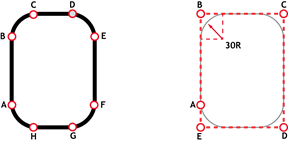

Axis Command
MOVEABSSEQ(table_index, axes, npoints, options, radius[, output[, transition_angle]])
The MOVEABSSEQ command allows a sequence of movements to be loaded via TABLE values. The moves can be automatically merged together using a circular or spherical arc. Movement on 2 to 6 axes may be controlled in this way.
The MOVEABSSEQ is loaded into the controller move buffers as a sequence of MOVEABS->MOVECIRC-> moves if 2 axes are specified and MOVEABS->MSPHERICAL-> if 3 or more axes are specified. The linear move may be omitted if the arcs blend together. If “Options” bit 0 is set to 1, the move sequence loaded will be a sequence of MOVEABSSP->MOVECIRCSP-> moves if 2 axes are specified and MOVEABSSP->MSPHERICALSP-> if 3+ axes are specified.
If Options bit 0 is set, 4 additional speed control values must be provided with each table point.
MOVE_COUNT is incremented on every move loaded. This parameter may be set by a user program.
|
table_index: |
Index in TABLE memory where the absolute positions start. |
|
|
axes: |
Number of axes 2 to 6. |
|
|
npoints: |
The number of points, each point requires 2 or 3 table values. |
|
|
options |
Bit 0 |
0 = Sequence will load MOVEABS, MOVECIRC, etc. 1 = Sequence will load embedded speed moves MOVEABSSP, MOVECIRCSP, etc. |
|
Bit 1 |
0 = No automatic FORCE_RAMP 1 = Auto-insert FORCE_RAMP |
|
|
Bit 2 |
0 = Load a sequence of standard move types. 1 = Load a sequence of MOVEABSSEQ/MOVEABSSEQSP contour |
|
|
Bit 3 |
0 = No MOVE_PA/MOVE_PB data in TABLE 1 = MOVE_PA/MOVE_PB data is embedded within the TABLE data |
|
|
Bit 4 |
0 = Process the move and load it 1 = Process the move but without loading it Only applicable when bit 2 is set |
|
|
Bit 5 |
0 = No embedded speeds 1 = Embed speeds from TABLE data Only applicable when bit 2 is set |
|
|
Bit 6 |
0 = No embedded MOVETURN 1 = Embed MOVETURN (default is mode 5 unless bit 16 is set) |
|
|
Bit 7 |
0 = Axes above XYZ are linear 1 = Axes above XYZ are in degrees |
|
|
Bits 8 … 13 |
Contains a 7-bit integer that specifies an offset between data points other than "Axes" |
|
|
Bit 14 |
0 = Use radius parameter 1 = Radius is embedded within the TABLE data |
|
|
Bit 15 |
Not used |
|
|
Bit 16 |
0 = Use MOVETURN mode 5 (default) 1 = Use MOVETURN mode 6 |
|
|
radius: |
The radius of the corner fillet (see option bit 14, which can override the value supplied in this parameter) |
|
|
output: |
Optional output of data to TABLE. 0 means do not output data to TABLE. Value otherwise is the TABLE start index for the data. |
|
|
transition_angle: |
Optional specification of transition angle (in Radians) for any filleted arcs that are generated. Either do not supply a parameter or set it to 0 if no transition curve is to be applied. |
|
The fillet Radius will automatically be reduced to the maximum possible if the points specified are insufficiently far apart to apply the fillet. Filleting will not be applied if bit 2 of options is set.
The current axes positions at the start of the MOVEABSSEQ are used for calculating the first fillet.
|
Offset |
Contents |
|
0 |
X change due to vector |
|
1 |
Y change due to vector |
|
2 |
Z change due to vector |
|
3 |
X change due to fillet |
|
4 |
Y change due to fillet |
|
5 |
Z change due to fillet |
|
6 |
XYZ linear increment |
|
7 |
Arc length of fillet |
|
8 |
Total length |
|
9 |
Number of segments |
|
10 |
Radius of fillet applied |
|
11 |
Unused |
|
12 |
Unused |
|
13 |
Unused |
|
14 |
Unused |
Draw O using separate MOVE and MOVECIRC (see Trio Manual MOVECIRC) and draw similar O using MOVEABSSEQ.

'Using MOVE and MOVECIRC
MOVE(0, 60) 'move A -> B
MOVECIRC(30, 30, 30, 0, 1) 'move B -> C
MOVE(20, 0) ' move C -> D
MOVECIRC(30, -30, 0, -30, 1) 'move D -> E
MOVE(0, -60) 'move E -> F
MOVECIRC(-30, -30, -30, 0, 1) 'move F -> G
MOVE(-20, 0) 'move G -> H
MOVECIRC(-30, 30, 0, 30, 1) 'move H -> A
WAIT IDLE
DEFPOS(100, 30)
WAIT UNTIL OFFPOS = 0
'Equivalent using MOVEABSSEQ
TABLE(1000, 100, 120)
TABLE(1002, 180, 120)
TABLE(1004, 180, 0)
TABLE(1006, 100, 0)
TABLE(1008, 100, 30)
MOVEABSSEQ(1000, 2, 5, 0, 30)
If “options” bit 0 is set the MOVEABSSEQ command will load embedded speed move types. Four additional parameters are loaded with each position to control the speed of the loaded move and potential following fillet arc:
0 - FORCE_SPEED linear move
1 - ENDMOVE_SPEED linear move
2 - FORCE_SPEED fillet arc
3 - ENDMOVE_SPEED fillet arc
The speed parameters for the potential fillet arc MUST be provided even if no fillet is used. For 2 axis programs 6 parameters are therefore required. For 3 axis programs 7 parameters must be entered.
UNITS AXIS(0) = 1000
UNITS AXIS(1) = 1000
BASE(0, 1)
MERGE = ON
trans = 0
SPEED = 2500
ACCEL = 100000
DECEL = 100000
lin_sp = SPEED
lin_end = SPEED * 0.5
arc_sp = SPEED * 0.5
arc_end = SPEED * 0.5
TABLE(1020, 0, 0, lin_sp, lin_end, arc_sp, arc_end)
TABLE(1026, 180, 0, lin_sp, lin_end, arc_sp, arc_end)
TABLE(1032, 360, 0, lin_sp, lin_end, arc_sp, arc_end)
TABLE(1038, 360, 360, lin_sp, lin_end, arc_sp, arc_end)
TABLE(1044, 0, 360, lin_sp, lin_end, arc_sp, arc_end)
TABLE(1050, 0, 0, lin_sp, lin_end, arc_sp, arc_end)
TABLE(1056, -180, 0, lin_sp, lin_end, arc_sp, arc_end)
MOVEABSSEQ(1020, 2, 7, 1, 80, 0, trans * PI / 180)
Creating a single move from large numbers of data points can create problems with the velocity profile when there are a very large number of moves processed in a short time:
To avoid these problems a whole sequence of points can be loaded as a single move. To perform this type of move the parameters for the move command must be set:
This example shows axes moving along an ellipse at a constant path speed.
'Suppose an ellipse is defined as a sequence of points 1 degree apart:
UNITS AXIS(0) = 1000
UNITS AXIS(1) = 1000
SPEED = 500
ACCEL = 50000
DECEL = 50000
SRAMP=30
DEFPOS(100,0)
a = 100
b = 50
FOR d = 0 TO 360
x = COS(d * PI / 180) * a
y = SIN(d * PI / 180) * b
TABLE(1000 + d * 2, x, y)
NEXT d
MOVEABSSEQ(1000, 2, 361, 4, 0, 2000)
Note that the MOVEABSSEQ move type builds a table of data values at TABLE(2000) .. TABLE(5610) in this example to enable the move to be processed.
MOVEABSSEQ with 6 axes.
FOR a = 0 TO 5
ATYPE AXIS(a) = 0
UNITS AXIS(a) = 1000
NEXT a
'Ignore uvw for speed calculations:
INTERP_FACTOR AXIS(3) = 0
INTERP_FACTOR AXIS(4) = 0
INTERP_FACTOR AXIS(5) = 0
'This program has data sets 10 values apart :
TABLE(100, 0, 0, 0, 0, 15, 0)
TABLE(110, 10, 0, 0, 10, -5, 0)
TABLE(120, 10, 10, 0, 0, 0, 10)
TABLE(130, 20, 10, 0, 20, 5, 10)
TABLE(140, 20, 0, 0, 0, 0, 10)
TABLE(150, 20, 0, 15, 5, 5, 0)
BASE(0)
'Define start position:
DEFPOS(0, 10, 0, 0, 20, 0, 0)
MOVE_COUNT = 0
SPEED = 5
ACC(SPEED * 50)
MERGE = ON
options = 10 * 256 'Set to use data 10 values apart
movet = 0
npoints = 6
axes = 6
radius = 2
MOVEABSSEQ(100, axes, npoints, options, radius)
MOVEABS(20, 0, 30, 5, 5, 0) 'This MOVEABS will be MERGE'd together with the MOVEABSSEQ